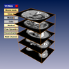

The tracking module implements head-tracking for immersive virtual reality applications. This means that a correct perspective viewing matrix is computed for an observer wearing stereo glasses with a 3D sensor. The module supports single-pipe multi-channel and true multi-pipe configurations.
The demo script illustrates some basic interaction principles.
 Amira VR demos